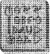

KUMANDAN Root sağlığa özellikle zararlı, mantar bir puro tüttürüyordu. Mekikteki Düzeltme Timinin bir çoğu kendilerinden geçmiş gibiydiler. Kelepçeli trollün pis kokusu bile puronun yanında hafif kalırdı. Elbette ki hiçbiri, iltihaplı bir popo çıbanından da hassas olan patronlarına, bir şey söylememişti.
Öte yandan Foaly amirini kızdırmaktan zevk alıyordu. “Şu kokuşmuş puronuzu buradan uzak tutun, Yarbay!” diye anırdı, Root Ops’a varır varmaz. “Bilgisayarlar dumandan hoşlanmaz!”
Root kaşlarını çattı, Foaly’nin bunu kafadan attığına emindi. Yine de bir alarm durumunun tam ortasındayken, kumandan, bilgisayarların çökmesini göze alamazdı, bu yüzden purosunu yoldan geçen gremlinlerden birinin kahve fincanının içinde söndürdü.
“Pekâlâ Foaly, neymiş bakalım bu alarm durumu? Umarım bu kez, iyi bir şeydir.”
Bu sentorun olur olmaz aşırılığa kaçma eğilimi vardı. İnsani uyduları bozuldu diye, bir keresinde Defcon İki’ye gitmişti.
“Kesinlikle iyi,” diye onu temin etti Foaly. “Yoksa kötü mü demem gerekirdi? Çok kötü.”
Root bağırsaklarındaki ülserin, bir yanardağ gibi fokurdamaya başladığını hissetti.
“Ne kadar kötü?”
Foaly Eurosat’ın üzerinde İrlanda’yı işaret etti. “Yüzbaşı Short’la bağlantımız koptu.”
“Neden şaşırmadım acaba?” diye inledi Root, yüzünü elleriyle örterek.
“Alplere kadar, yol boyunca onunla iletişim halindeydik.”
“Alpler mi? Karayolundan mı gitti?”
Foaly başını salladı. “Kurallara karşı. Biliyorum. Ama herkes yapıyor.”
Yarbay istemeyerek de olsa kabul etti. Kim böyle bir manzaraya karşı koyabilirdi ki? Acemiliğinde, kendisi de bu suçtan cezalandırılmıştı.
“Pekâlâ. Devam et. Onu ne zaman kaybettik?”
Foaly ekranda bir görüntü kayıt kutusu açtı.
“Bu, Holly’nin miğfer ünitesinin kaynağı. Şurada, Paris’teki Eurodisney’in üzerindeyiz...
Foaly hızlı ileri sarma düğmesine bastı.
“Şimdi yunuslar, falan filan. İrlanda sahil şeridi. Hâ
lâ kaygılanacak bir şey yok. Bakın, yer saptayıcıları devreye giriyor. Yüzbaşı Short büyülü noktaları tarıyor. Elli yedinci bölge kırmızı bir ışık veriyor, o da oraya doğru yöneliyor.”
“Peki, neden Tara değil?”
Foaly burnundan soludu. “Tara mı? Kuzey kutbundaki her hippi peri, dolunayda Lia Fail’in çevresinde dans ediyordur. Öylesine çok kalkan olacaktır ki her yer sular altına gömülmüş gibi duracak.”
“İyi,” diye homurdandı Root, sıkılmış dişlerinin arasından. “İşine devam et, tamam mı?”
“Pekâlâ. Kulaklarınızı dört açın.” Foaly kasetin birkaç dakikasını daha ileri sararak geçti. “İşte. Önemli olan burası... Yumuşak, hoş bir iniş, kanatları asıyor. Holly miğferini çıkartıyor.”
“Bu kurallara aykırı,” diye söze girdi Root. “LEP subayları asla miğferlerini -
“LEP subayları asla yeryüzündeyken başlıklarını çıkartmamalıdırlar, başlıkta bir sorun olduğu durumlar dışında,” diye tamamladı Foaly. “Evet, Yarbay, hepimiz el kitabında yazanları biliyoruz. Ne yani, havada birkaç saat kaldıktan sonra, hiç gizli gizli soluk almadığınızı mı söylüyorsunuz?”
“Hayır,” diye itiraf etti Root. “Nesin sen? Onun manevi anne perisi falan mı? Önemli yere gel!”
Foaly kendinden hoşnut, gizli gizli gülümsedi. Root’un tansiyonunu yükseltmek, bu işin en zevkli yanlarından biriydi. Başka kimse bunu yapmaya cesaret etmezdi. Çünkü herkesin yeri doldurulabilirdi. Ama Foaly’nin değil. Tüm sistemi sıfırdan başlayarak oluşturmuştu ve bir başkası sisteme giriş yapmayı deneyecek olsa, gizli bir virüs onu sivri kulaklarının üzerine çökertirdi.
“Önemli yer. işte burası. Bakın. Birdenbire Holly miğferini düşürüyor. Merceği altta kalmış olmalı çünkü resmi kaybediyoruz. Ama sesi hâlâ alabiliyoruz, bunu dinleteceğim.”
Foaly fondaki gürültüyü süzüp işitsel sinyali arttırdı. “Pek iyi kalite sayılmaz. Mikrofon kameranın içinde. Bu yüzden o da, toprağın içinde yüzüstü duruyordu.” ‘Güzel bir bezelye fırlatıcısı,’ dedi bir ses. Bu kesinlikle bir insan sesiydi. Kalındı üstelik. Bu genellikle sesin sahibinin iriyarı olduğu anlamına gelirdi.
Root tek kaşını kaldırdı. “Bezelye fırlatıcısı mı?” “Argoda tabanca.”
“Ya?” Bu basit sözcüklerin önemi, onu sarstı. “Holly silahını çekmiş.”
“Bekleyin biraz, işler daha da kötüleşiyor.”
‘Kuzu kuzu teslim olacağını sanmam,’ dedi ikinci bir ses. Bu konuşmaları dinlemek bile kumandanın ürpermesine neden olmuştu. ‘Yo,’ diye sürdürdü konuşmasını ses, ‘sanmam.’
“Bu kötü,” dedi Root, yüzü hiç de ona yakışmayacak kadar solgundu. “Bu bir tuzağa benziyor. Bu iki goril orada beklemedeydiler. Nasıl olabilir?”
Sonra hoparlörde Holly’nin sesi duyuldu, sesinde tehlike ânında takındığı o ukala ton vardı. Yarbay iç geçirdi. En azından hayattaydı. Taraflar karşılıklı tehditler savurdukça ve ikinci insan periler hakkındaki olağanüstü bilgilerini ortaya koydukça, durum daha da kötüleşiyordu.
“Ayin’i biliyor!”
“Durun, en kötü yeri bu.”
Root’un çenesi düştü. “En kötü yeri mi?”
Bir kez daha Holly’nin sesi. Bu kez hipnotizma sözlerini söylüyordu.
“Artık onları ele geçirdi,” diye sevinçle haykırdı Root. Ama öyle görünmüyordu. Hipnotizma etkisini gösterememekle kalmamış, gizemli ikili bunu eğlenceli bile bulmuştu.
“Holly’den bize ulaşan bilgiler bunlar,” diye belirtti Foaly. “Çamur Adamlardan biri, bir süre kamerayla uğraşıyor, sonra da her şeyi kaybediyoruz.”
Root gözlerinin arasındaki kırışıklıkları ovaladı. “Devam etmek için elimizde pek fazla bir şey yok. Ne bir görüntü, ne de bir isim. Bunun acil bir durum olduğundan yüzde yüz emin olamayız.”
“Delil mi istiyorsunuz?” diye sordu Foaly, kaseti geri sararak. “Size delil göstereceğim.”
Hazır olan videoyu çalıştırdı.
“Şimdi şunu izleyin. Ağır çekimde göstereceğim. Saniyede bir kare.”
Root ekrana doğru eğildi, pikselleri görecek kadar yakma.
“Yüzbaşı, Short inişe geçiyor. Miğferini çıkartıyor. Yere eğiliyor, sanırım yerden bir meşe palamudu almak için ve... işte!”
Foaly ‘dondur’ düğmesine basıp görüntüyü tamamen dondurdu. “Alışılmadık bir şey görüyor musunuz?”
Yarbay ülserli midesinin hızla çalkalandığını hissetti. Resmin sağ üst köşesinde bir şey belirmişti. İlk bakışta bir ışıkmış gibi görünüyordu, ama neyin ışığıydı ya da bu ışık nereden yansımış olabilirdi?
“Bunu büyütebilir misin?”
“Elbette.”
Foaly, konuyla ilgiyi bölgeyi kesip 400 kez büyüttü. Işık ekranı kapladı.
“Yo, hayır,” diye soludu Root.
Önlerindeki bilgisayar ekranında, geçici olarak dondurulmuş olan görüntüde bir şırıngalı ok duruyordu. Bu konuda hiç kuşku yoktu. Yüzbaşı Holly Short görev sırasında kaybolmuştu. Büyük olasılıkla ölmüştü ya da en azından, düşman güçleri tarafından esir alınmıştı. “Lütfen, yer saptayıcısı hâlâ çalışıyor olsun.” “Çalışıyor. Sinyal güçlü. Saatte seksen kilometrelik bir hızla, kuzeye doğru hareket ediyor.”
Root bir süre sessiz kalıp stratejisini belirledi. “Alarm durumuna geç ve Geri getiricilere de söyle, ranzalarından kalkıp doğruca buraya gelsinler. Onları yüzey atışı için hazırla. Taktik uzmanlarının hepsini istiyorum, birkaç tane de teknisyen. Seni de Foaly. Bu kez zamanı durdurmamız gerekebilir.”
“Anlaşıldı, Yarbay. Bu olaya Recon’un karışmasını istiyor musunuz?”
Root başını salladı. “Elbette.”
“Yüzbaşı Vein’e haber vereceğim. O bu işlerde bir numaradır.”
“Yo, hayır,” dedi Root. “Bu tür bir iş için, içimizde en iyi olana ihtiyacımız var. O da benim. Kendimi yeniden aktif göreve geçiriyorum.”
Foaly öylesine şaşırmıştı ki zekice bir yorumda bile bulunamadı.
“Siz... Siz...”
“Evet, Foaly. Bu kadar şaşırmış gibi davranma. Emrimde, tarih boyunca görev alan tüm subaylardan daha başarılı bir recon var. Üstelik, temel eğitimimi de İrlanda’da tamamladım ben. Melon şapkalar ve şık bastonlar döneminde.”
“Evet, ama bu yüz yıl önceydi, üstelik o zamanlarda bile yeni açmış bir gül goncası sayılmazdınız, nasıl derler bilirsiniz.”
Root tehlikeli bir gülücük attı. “Merak etme, Foaly. Hâlâ formdayım. Ye yaş engelini, kocaman bir silahla gidereceğim. Şimdi bana bir mekik hazırla. Bir sonraki- dalgalanmada yola çıkıyorum.”
Foaly tek bir espri bile yapmadan, kendisine denileni yaptı. Yarbayın gözlerinde bu pırıltı olduğunda, hemen işinizi yapar ve ağzınızı açmazdınız. Ama Foaly’nin sessizce boyun eğmesinin bir nedeni daha vardı. Holly’nin başının gerçekten belada olabileceği düşüncesi onu derinden etkilemişti. Sentorların pek arkadaşı olmazdı ve az sayıdaki arkadaşlarından birini kaybetme düşüncesi, Foaly’yi endişelendiriyordu.
Artemis bazı teknolojik ilerlemeler olduğunu tahmin etmişti, ama dört çekerin kontrol panelini kaplayan, hazine değerindeki bu peri silahları gibisini değil.
“Etkileyici,” diye mırıldandı. “Bu özel görevi burada kesmiş olsaydık bile, bunların patentlerinden bir servet kazanabilirdik.”
Artemis taşınabilir tarayıcıyı, baygın yatan elfin kolundaki bilekliğin üzerinde gezdirdi. Sonra da perice harfleri, dizüstü bilgisayarına yükledi.
“Bu bir tür yer saptayıcısı. Hiç kuşkusuz bu Leprechaunun arkadaşları şu anda onun hareketlerini izliyorlardır.”
Kâhya yutkundu. “Şu anda mı efendim?”
“Öyle görünüyor. Ya da en azından saptayıcının hareketlerini izliyorlardır.”
Artemis birdenbire konuşmayı kesti, kafatasındaki elektrik akımı yeni bir beyin dalgası gönderirken, bakışlarındaki odaklanma kayboldu.
“Kâhya?”
Hizmetkâr, nabzının hızlandığını hissetti. Bu ses tonunu biliyordu. Ortada bir şeyler dönüyordu.
“Evet, Artemis?”
“Şu Japon balina avcı gemisi. Hani, şu liman yetkililerinin el koymuş olduğu. Rıhtımda bağlı duruyor mudur, hâlâ?”
Kâhya başını salladı. “Evet, sanırım.”
Artemis yer saptayıcısının kayışını işaret parmağına takıp çevirdi.
“İyi. Bizi oraya götür. Küçük dostlarımıza, karşılarındakilerin tam olarak kim olduklarım göstermenin zamanı geldi.”
Root yeniden aktif göreve geçme belgesini, görülmeye değer bir hızla damgaladı - bu LEP yönetimin üst kademesi için oldukça sıradışıydı. Genellikle, Recon Timinin bir başvuruyu onaylaması aylar sürer ve bir sürü beyin patlatan sıkıcı toplantı yapılırdı. Neyse ki Root’un, kumandanla ilişkileri iyiydi.
Arazi kıyafetini yeniden giymek güzeldi, hatta Root tulumunun göbek bölümünün eskisine oranla darlaşmadığına kendini inandırmayı bile başardı. İçine tıkıştırdıkları yeni gereçler yüzünden bel vermiştir, diye mantık yürüttü. Root’un kendisinin küçük aygıtlarla kaybedecek zamanı yoktu. Yarbayın tek ilgisini çeken, arkasındaki kanatlarla, kalçasına bağlı duran çokevreli, su soğutmalı, üç namlulu tabancaydı — dünyanın altında üretilmiş en güçlü silah. Eskiydi, orası kesin ama bir düzine silahlı çatışmada Root’un yanında olmuş ve kendini aktif bir subay gibi hissetmesini sağlamıştı.
Holly’ye en yakın çavlan El’di: Tara. Gizli bir görev için ideal bir yer değildi ama ay saatine göre, geriye kalan iki saat boyunca, yerüstü gezintisi yapacak zaman yoktu. Bu kargaşayı güneş doğmadan önce halletmeleri gerekiyorsa eğer, hızlı hareket etmeleri şarttı. Root görünüşe göre iki yıldır kuyrukta bekleyen bir tur grubunun önüne geçip ekibi için bir El mekiğe el koydu.
“Şansınıza küsün,” diye hırladı Root, tur sorumlusuna. “Üstelik, kriz atlatılana kadar, tüm gereksiz uçuşları da kaldırıyorum.”
“Peki bu ne kadar sürer?” diye cıyakladı öfkeli gnome, sanki bir şikâyet mektubu yazmaya hazırlanıyormuşçasına defterini sallayarak.
Root purosunun izmaritini yere tükürüp çizmesinin topuğuyla iyice ezdi. Duygularını simgelerle anlatma alışkanlığı fazlasıyla belli oluyordu.
“Çavlanlar, madam, benim canım çektiğinde açılacak,” diye hırladı kumandan. “Ve eğer sen ve o fosforlu üniforman yolumdan çekilmezseniz, çalışma iznini elinden alır ve bir LEP subayının işini engellemekten seni hücreye attırırım.”
Tur sorumlusu, Root’un önünde boynunu büküp sessizce sırasına geri döndü, keşke üniforması bu denli ciyak bir pembe olmasaydı.
Foaly mekiğin önünde bekliyordu. Durumun ciddiyetine karşın, Root’un üzerine yapışmış tulumunun içinde hafifçe sallanan göbeğini görünce, kendini hafifçe kişnemekten alıkoyamadı.
“Bundan emin misiniz, Yarbay? Genellikle mekik başına bir yolcuya izin veririz.”
“Ne demek istiyorsun?” dedi Root, kafası karışmış gibi. “Yalnızca bir...”
Sonra Foaly’nin, göbeğine diktiği o anlamlı bakışı yakaladı.
“Oh. Ha ha. Çok eğlenceli. Devam et, Foaly. Sabrımın bir sınırı var, biliyor musun?”
Ama bu boş bir tehditti ve her ikisi de bunu biliyorlardı. Foaly iletişim ağını sıfırdan kurmakla kalmamıştı, o aynı zamanda dalgalanma tahmini konusunda da bir öncüydü. O olmasaydı, insanlık teknolojisi perilerle kolaylıkla boy ölçüşebilirdi.
Root kendini mekiğe sıkıca bağladı. Yarbaya elli yıllık bir gemi vermek olmazdı. Bu bebek montajdan henüz çıkmıştı. Baştan aşağı gümüş ve pırıl pırıldı, magma akıntılarını otomatik olarak okuyabilen, yepyeni, çentikli dengeleme yüzgeçleriyle donatılmıştı. Tabii ki Foaly’nin buluşuydu. Son bir asırdır, mekik tasarımları gelecekçi bir çizgiye dayalıydı - bir sürü neon ve lastik. Oysa son zamanlarda çizgisi, geçmişe dönük bir anlayış sergiliyordu, tüm zımbırtıları, ceviz ağacından paneller ve deri döşemelere değiştirmişti. Root bu eski stil kadaroru çok rahatlatıcı bulmuştu.
Parmaklarını manevra kollarına kenetledi ve birdenbire, bu aletlere binmeyeli ne kadar uzun zaman olduğunu fark etti. Yarbayın huzursuzluğu Foaly’nin dikkatini çekti.
“Merak etmeyin, şef,” dedi her zamanki alaycılığını bir kenara bırakarak. “Tek boynuzlu ata binmek gibidir. Asla unutmazsın.”
Root tatmin olmamış gibi homurdandı. “Haydi başlayalım,” diye mırıldandı. “Fikrimi değiştirmeden önce.” Foaly emme halkası yerine oturana kadar kapıyı çekti, ana kapı havalı bir ıslık çalarak kilitlendi. Root’un yüzü kuvars pencere camının ardından yeşilmiş gibi görünüyordu. Artık çok korkmuş gibi durmuyordu. Tam aksine.
Artemis perinin yer saptayıcısına küçük bir işlem uyguluyordu. Mekanizmayı bozmadan, yalnızca boyutlarında bazı değişiklikler yapabilmek büyük beceri gerektiriyordu. Teknolojiler kesinlikle birbirine zıttı. Gözünüzde bir balyozla, açık kalp ameliyatı yapmayı canlandırın.
İlk sorun şu lanet olası şeyi açmaktı. Vida başları, gerek düz, gerekse yıldız tornavidalara meydan okuyordu. Artemis’in kapsamlı maymuncuk takımı bile, bu küçücük yivlere girmeyi başaramamıştı. Gelecekçi düşün, dedi Artemis kendi kendine. Gelişmiş teknolojiyi düşün.
Birkaç dakika sessizce düşündükten sonra, aklına gelmişti. Manyetik cıvatalar. Bu ortadaydı. Ama bir dört çekerin arka koltuğunda, döner bir manyetik alan nasıl yapılabilirdi ki? Bu olanaksızdı. Tek yapılabilecek şey, vidaları küçük bir mıknatısın yardımıyla, elle sökmekti-
Artemis alet kutusundaki mıknatısı, oyuğunun içinden çıkartıp iki kutbunu birden küçük vidalara değdirdi. Eksi kutup, onları hafifçe hareket ettirdi. Bu kadarı Artemis’in, işe iğne uçlu bir kerpetenle devam etmesi için yeterdi ve kısa süre sonra yer saptayıcısının paneli parçalara ayrıldı.
Elektrik devresi önemsizmiş gibi görünüyordu. Ve ortada lehimden eser yoktu. Başka bir tür bağlayıcı kullanıyor olmalıydılar. Belki zamanı olsaydı, bu aletin çalışma prensiplerini çözebilirdi, ama şimdilik işini doğaçlama yapmak zorundaydı. Başkalarının dikkatsizliğinden yararlanması gerekiyordu. Ve zaten Peri Halkı, insanlar gibiyse eğer, görmek istediklerini görürlerdi.
Artemis yer saptayıcısının üst bölümünü, arabanın ışığına tuttu. Yarı saydamdı. Hafifçe kutuplaşmış ama yine de iyi sayılırdı. Artemis bir sürü ince parlak kabloyu kenara itip deliğe bir düğme iliği kamerası yerleştirdi. Bezelye boyutundaki vericiyi azıcık silikonla sağlamlaştırdı. Üstünkörü ama etkili umarım.
Manyetik vidalar uygun araç gereç olmadan, tatlılıkla yerlerine yerleştirilmeyi reddettiklerinden, Artemis onları da zamklamak zorunda kaldı. Yarım yamalak bir iş ama yeterli olmalıydı, nasıl olsa yer saptayıcı çok yakından incelenmiyordu. Peki ya inceleniyorsa? Ne yapalım, ilk baştan ele geçireceğini asla tahmin etmediği bir üstünlüğü kaybedecekti yalnızca.
Kâhya şehir sınırına geldiklerinde arabanın uzun farlarını söndürdü. “Rıhtıma yaklaşıyoruz, Artemis,” dedi omzunun üzerinden. “Gümrük ve Vergi memurları, kesin buralarda bir yerdedirler.”
Artemis başıyla onayladı. Bu mantıklıydı. Liman sürekli yasadışı işlerin çevrildiği bir merkezdi. Ülke kaçakçılığının yüzde elliden fazlası, bu bir kilometrelik kıyıda dönüyordu.
“Bir şaşırtmaca yapalım öyleyse, Kâhya. Tek ihtiyacımız olan, iki dakikalık bir süre.”
Hizmetkâr anlayışla başını salladı.
“Her zamanki mi?”
“Farklı bir şey yapmak için bir neden göremiyorum. Göster kendini... Daha doğrusu gösterme.”
Artemis göz kırptı. Bu, son zamanlarda yaptığı ikinci şakaydı. Ve yüksek sesle yaptığı ilk şakaydı. Dikkat etmekte yarar vardı. Şimdi eğlence zamanı değildi.
Rıhtımdakiler sigara sarıyorlardı. Kurşun külçe büyüklüğündeki parmaklarla bunu yapmak pek kolay değildi ama üstesinden geliyorlardı. Ve üstelik, birkaç parça kahverengi tütün, büyük ve yassı kaldırım taşlarına düşerse de ne olurdu ki yani? Nasıl olsa tütün torbaları, devletin öngördüğü vergiyi fiyatlarına ekleme zahmetine bile girmeyen, ufak tefek bir adamın karton kutularının yanında duruyorlardı.
Kâhya adamlara doğru ilerledi, başındaki kasketin siperliği gözlerine gölge düşürüyordu.
“Soğuk bir gece,” dedi toplanmış duran gruba.
Kimse yanıt vermedi. Polisler farklı biçim ve boyutlarda ortaya çıkabilirlerdi.
İri yarı yabancı inat etti. “Böylesi dona çekmiş bir gecede, çalışmak bile ortalarda dolaşmaktan iyidir.”
İşçilerden biri, biraz yumuşak başlıca olanı, elinde olmadan onaylarcasına başım salladı. Arkadaşlarından biri, kaburgalarının arasına dirsek attı.
“Yine de,” diye sürdürdü konuşmasını yeni gelen, “sizin gibi kızların, hayatınız boyunca, doğru dürüst bir gündüz işi yaptığınızı sanmıyorum.”
Yine yanıt yoktu. Ama bu kez sessizliğin nedeni, rıhtımdakilerin ağızlarının bir karış açık kalmasıydı.
“Sizler, acınacak bir takımsınız, evet, kesinlikle öyle,” dedi Kâhya, tasasızca. “Kıtlık zamanı, erkek olarak sayılabileceğinizden hiç kuşkum yok. Ama bugünün standartlarına göre, gömlek giymiş bir grup tıfıldan başka bir şey değilsiniz.”
“Hırrrr,” dedi tayfalardan biri. Tek söyleyebildiği buydu.
Kâhya bir kaşını kaldırdı. “Hır mı? Hem acınacak, hem de konuşma özürlü. İyi bir birleşim. Anneleriniz sizinle gurur duyuyor olmalı.”
Yabancı haddini aşmıştı. Annelerinin adını ağzına almıştı. Artık onu dayak yemekten hiçbir şey kurtaramazdı, hatta aptalın teki olduğu gerçeği bile. Geniş bir dağarcığa sahip bir aptal.
Adamlar sigaralarını yere fırlattılar ve yavaşça bir yarım daire oluşturdular. Bire karşı altıydılar. Onlara acıyor olmalıydınız. Kâhya’nın işi henüz bitmemişti.
“Şimdi hanımlar, bir şey yapmaya başlamadan önce, tükürmek ve anneye gammazlamak yok.”
Bu bardağı taşıran son damla oldu. Adamlar hep bir ağızdan uluyup saldırıya geçtiler. Düşmanlarıyla temasa geçmeden önce biraz olsun dikkat etselerdi onun, ağırlık merkezini aşağı indirmek için yer değiştirdiğini fark edebilirlerdi. Aynı zamanda, cebinden çıkarttığı ellerinin, neredeyse birer kürek boyunda olduğunu da görebileceklerdi. Ama hiç kimse, Kâhya’ya dikkat etmiyordu — birbirlerini izlemekle fazlasıyla meşguldüler; tek başlarına saldırmadıklarından emin olmak istiyorlardı.
Bir şaşırtmacanın en önemli noktası, insanın dikkatini dağıtması gerektiğidir. Büyük ve kaba hareketler kesinlikle Kâhya’nın tarzı değil. O, bu beyefendilerin işlerini, 500 metre uzaktan, bir ok tüfeğiyle bitirmeyi yeğlerdi. Aksi halde, temas mutlak gerekliyse eğer, boynun aşağısındaki sinirlere yapılacak birkaç başparmak darbesi, onun tercih edeceği hareket tarzıydı - bir fısıltı kadar sessiz. Ama bu, uygulamanın amacına ters düşerdi.
Böylece Kâhya bir canavar gibi bağırarak, en vahşi dövüşme hareketlerini kullanarak, eğitimine karşı geldi. Hareketler vahşi olabilirdi ama etkisiz oldukları söylenemezdi. Belki bir Shao Lin rahibi, bu abartılı hareketlerden bazılarını önceden tahmin edip ona göre davranabilirdi ama bu kez rakipleri eğitimsiz adamlardı. Açık söylemek gerekirse, tam anlamıyla ayık da sayılmazlardı.
Kâhya ilkini gülle gibi bir yumrukla devirdi. Öbür ikisinin başlarım birbirine çarptı, tıpkı çizgi filmlerdeki gibi. Dördüncüsünün işini, en utanç duyduğu hareket olan döner tekmeyle bitirdi. Ama en gösterişli hareketi son ikisine saklamıştı. Hizmetkâr sırt üstü yuvarlandı ve adamları ceketlerinin yakalarından tuttuğu gibi Dublin limanına doğru fırlattı. Sular sıçradı, feryatlar duyuldu. Kusursuzdu.
Bir kargo konteynerinin siyah gölgesinden, yanan iki farın ışığı belirdi ve hükümet aracı, iskele boyunca gıcırdayarak ilerledi. Beklenildiği gibi Gümrük ve Vergi ekibi görev başındaydı. Kâhya acımasız bir hoşnutlukla sırıtıp köşeye gizlendi. Memurlar rozetlerini takmaya ya da soruşturmalarını yapmaya başlamadan çok önce, o oradan uzaklaşmıştı bile. Soruşturmaları pek bir sonuç vermeyecekti ya, neyse. İzini sürmek için ‘bir ev kadar büyük’ yeterli bir tanımdı.
Kâhya arabaya vardığında Artemis özel görevinden dönmüştü.
“Aferin, eski dostum,” dedi Artemis. “Eminim, savaş sanatı öğretmeninin şu an kemikleri sızlıyordur. Döner tekme ha? Nasıl yapabildin?”
Kâhya geri geri gidip tahta iskeleden uzaklaşırken aklından geçenleri söylememek için kendini zor tuttu. Üstgeçitten geçerlerken, aşağıda yarattığı kargaşaya bakmaktan alıkoyamadı kendini. Hükümet yetkilileri, sırılsıklam olmuş bir tayfayı, limanın kirli sularından çekip çıkartıyorlardı.
Artemis’in bu şaşırtmacayı istemesinin bir nedeni vardı. Ama Kâhya bununla ilgili soru sormanın bir yararı olmayacağını biliyordu. Patronu planlarını asla kimseyle paylaşmazdı, ta ki doğru zamanın geldiğine inanıncaya kadar. Ve Artemis Fowl bunun doğru zaman olduğuna inandığında, genellikle doğruydu.
Root titreyerek mekikten çıktı. Onun zamanında, yolculuklar böyle miydi, anımsamıyordu. Gerçeği söylemek gerekirse, eskiden çok daha kötüydü galiba. Şık bastonlar zamanında, polimer koşum takımları, otomatik roketler ve dış monitörler de yoktu tabii. İçgüdünüze, azıcık da büyüye güvenirdiniz. Bazı yönlerden Root böyle olmasını yeğlerdi. Bilim işin büyüsünü yok ediyordu.
Tünelin içinde sendeleyerek ilerleyip terminale geldi. En uygun yer Tara olduğu için, bekleme salonu yeni yetmelerle tıklım tıklım doluydu. Yalnızca Haven Şehri’nden, haftada altı mekik geliyordu. Dalgalanmalarla değil, elbette. Parayla yolculuk eden turistler, çok fazla itilip kakılmaktan hoşlanmazlardı, tabii Disneyland’da çıktıkları yasa dışı gezinti dışında.
Peri kalesi mekiğin ertelenişinden yakman dolunay gececileriyle kaynıyordu. Bilet satış tezgâhının arkasındaki sprite, çevresini sarmış öfkeli gremlinlerden gizlenmeye çalışıyordu.
“Bana büyü yapmanızın bir yararı yok,” diye gıcırdadı sprite. “işte, istediğiniz elf orada, onunla görüşün.”
Yeşil parmağıyla yaklaşan kumandanı işaret etti. Gremlin Güruhu Root’a doğru döndü ve kalçasının üzerinde duran üç namlulu tabancayı görür görmez, dönmeye devam ettiler.
Root tezgâhın arkasında duran mikrofonu kaptığı gibi, onu kablosunun uzandığı yere kadar çekti.
“Şimdi beni iyi dinleyin,” diye hırladı Root, sert sesi terminalin içinde yankılandı. “Ben LEP’ten, Yarbay Root. Yer üstünde acil bir durum söz konusu ve siz sivillerin işbirliğine ihtiyacımız var. Öncellikle gevezeliği kesin de düşüncelerimi toparlayabileyim!”
Root isteklerinin yerine getirildiğinden emin olmak için konuşmasına ara verdi. Getiriliyorlardı.
“İkinci olarak, her birinizin, hatta şu cıyaklayan bebeklerin bile, ben işe koyulana kadar, banklarda oturmasını rica ediyorum. Kapışmaya ya da birbirinizin kafasını şişirmeye daha sonra devam edersiniz. Ya da siviller her ne yaparsa, onu yapmaya.”
Şimdiye kadar hiç kimse Root’u politik dürüstlüğü konusunda suçlamamıştı. Hiç kimse bunu denememişti bile.
“Ve buranın sorumlusu her kimse, buraya gelmesini istiyorum. Hemen şimdi!”
Root mikrofonu masanın üzerine rasgele fırlattı. Binadaki herkesin kulak zarı, boru sesine benzer bir ıslıkla titreşti. Saniyenin onda biri kadar bir süre sonra, soluk soluğa bir elf/goblin melezi, Root’u dirseğinden çekiştiriyordu.
“Yapabileceğimiz bir şey var mı, Yarbay?”
Root burnunun altındaki deliğe kaim bir puro sıkıştırarak başını salladı. “Tam bu noktadan, bir tünel açmanızı istiyorum. Gümrük ve Göçmenlik bürosu işlemleriyle rahatsız edilmek istemiyorum. Adamların buraya geldikten sonra herkesi aşağı indirmeye başlayın.” Mekik limanı yöneticisi yutkundu. “Herkesi mi?” “Evet. Terminal personeli dahil.. Taşıyabildiğiniz her şeyi yanınıza alın. Toplu boşaltım.” Root durup yöneticinin leylak rengi gözlerine ters ters baktı. “Bu bir eğitim çalışması değil.”
“Yani - ”
“Evet,” dedi Root, giriş rampasından inerken. “Çamur Adamlar, çok düşmanca bir davranışta bulundular. Kim bilir, sonu nereye varır?”
Elf/goblin karışımı, Root’un bir puro dumanı bulutunun içinde gözden kayboluşunu izledi. Çok düşmanca bir davranış mı? Bu, savaş anlamına gelebilirdi. Cep telefonundan, muhasebecisinin numarasını çevirdi.
“Bark? Evet. Ben Nimbus. Mekik limanındaki tüm hisselerimi satmanı istiyorum. Evet hepsini. Önsezilerim bana, fiyatlarının şiddetli bir düşüş yaşayacağını söylüyor.”
Yüzbaşı Holly Short sanki beyninin bir vantuzlu salyangoz tarafından emilip kulak deliğinden çıkartıldığını hissediyordu. Böylesi bir acının nereden kaynaklanabileceğini düşünmeye çalıştı ama duyuları henüz hafızasına kadar uzanamıyordu. Şimdilik tek yapabildiği soluk alıp uzanabilmekti.
Bir sözcük söylemenin zamanıydı. Kısa ve yerinde bir söz. İmdat, diye karar verdi, bunu söylemeyi deneyecekti. Titrek bir soluk aldı ve ağzını açtı.
“Dııııt,” dedi kalleş dudakları. İşe yaramadı. Bu sarhoş bir gnomeun standartlarına göre bile anlaşılmaz sayılırdı.
Neler oluyordu? Orada öylece, nemli bir tünelin dibindeki bir kök kadar güçsüz, sırt üstü yatıyordu. Ona bunu yapan neydi? Holly kör edici acısından uzaklaşmaya çalışarak düşüncelerini yoğunlaştırdı.
Troll mü? Yoksa bunu yapan o muydu? Troll restorandayken onu yaralamış mıydı? Bu, durumu açıklayabilirdi. Ama hayır. Eski ülke ile ilgili bir şeyler anımsamaya çalıştı. Ve Ayin ile ilgili. Ve ayak bileğini dürten bir şey vardı.
“Selam?”
Bir ses. Kendi sesi değildi. Hatta başka bir elfinki de değildi.
“Demek uyandın?”
Bu avrupa dillerinden biriydi. Latince. Hayır, İngilizce. Yoksa İngiltere’de miydi?
“Okun seni öldürmüş olabileceğini düşündüm. Ne de olsa siz yabancıların içleri bizimkilerden farklı. Bunu televizyonda izlemiştim.”
Saçmalık. Yabacılar içleriymiş? Bu yaratık neden söz ediyordu?
“Formda görünüyorsun. Muchacho Maria gibi, o bir Meksikalı güreşçi cücedir.”
Holly inledi. Dillere olan yetisi, henüz devreye girmemiş olmalıydı. Ne tür bir çılgınlıkla karşı karşıya olduğunu anlamanın zamanıydı. Tüm gücünü, başının ön bölümünde yoğunlaştırıp tek gözünü açmayı başardı. Sonra, hemen kapadı. Sanki sarı renkli kocaman bir sinek, gözlerini ona dikmiş bakıyordu.
“Korkma,” dedi sinek. “Bu yalnızca güneş gözlüğü.” Holly bu kez, her iki gözünü de açtı. Yaratık gümüş renkli bir göze hafifçe vuruyordu. Yo, göze değil. Bir merceğe. Aynalı bir merceğe. Tıpkı öbür ikisinin taktıkları mercekler gibi... her şey, sersemletici bir hızla aklına geliyordu, tıpkı şifreli bir kilidin yerli yerine oturan rakamları gibi, düşünceleri hafızasındaki boşluğu doldurmak için akın ediyorlardı. Ayin sırasında, iki insan tarafından kaçırılmıştı. Periler hakkında fazlasıyla çok şey bilen iki insan tarafından.
Holly bir kez daha konuşmayı denedi. “Nerede... neredeyim ben?”
İnsan sevinçle kıkırdayıp el çırptı. Holly kızın tırnaklarını fark etmişti, uzun ve ojeliydiler.
“İngilizce konuşabiliyorsun. Ne tür bir aksan bu? İçinde her şeyden biraz var gibi.”
Holly kaşlarını çattı. Kızın sesi baş ağrısının arasında şişe mantarı açmak gibiydi.
“Eşyalarım nerede?”
Kız karşısında yaramaz bir çocuk varmış gibi parmağını salladı.
“Artemis küçük silahını ortadan kaldırmak zorundaydı, öbür oyuncaklarla birlikte. Kendine zarar vermemen için.”
“Artemis mi?”
“Artemis Fowl. Tüm bunlar onun fikriydi. Her şey, her zaman onun fikridir zaten.”
Holly kaşlarını çattı. Artemis Fowl. Nedenini bilmiyordu ama ismi bile onu ürpertmeye yetmişti. Kötüye işaretti. Peri içgüdüsü asla yanılmazdı.
“Beni aramaya geleceklerdir, biliyorsun,” dedi Holly, kulak tırmalayıcı bir sesle. “Ne yaptığınızın farkında değilsiniz.” Kız kaşlarını çattı. “Kesinlikle haklısın. Neler olduğu hakkında en ufak bir fikrim yok. Bu yüzden beni ruhsal açıdan tedirgin etmenin hiçbir yararı yok.”
Holly kaşlarını çattı. Bu insanla zekâ oyunları oynamak kesinlikle anlamsızdı. Tek ümidi hipnotizmaydı ama bu da görüntüyü yansıtan yüzeylerde etkisiz olurdu. Bu insanlar nasıl oluyor da bunu biliyorlardı? Bu daha sonra halledilebilirdi. Şimdilik tek çözmesi gereken şey, bu kızı gözlüğünden ayıracak bir yol bulmaktı.
“Sen güzel bir insansın,” dedi Holly, pohpohlayan sesinden bal damlayarak.
“Öyle mi, teşekkürler ...”
“Holly.”
“Öyle mi, teşekkürler Holly. Bir keresinde yerel gazeteye çıkmıştım. Bir yarışma kazanmıştım. Bin dokuz yüz doksan dokuz, Şeker Pancarı Güzeli.”
“Tahmin etmiştim. Doğal güzellik. Eminim gözlerin muhteşemdir.”
“Herkes öyle der,” diye onayladı Juliet. “Zemberek gibi kirpikler.”
Holly iç geçirdi. “Onları görebilseydim keşke.” “Neden olmasın?”
Juliet’in parmakları, gözlük saplarının üzerinde gezindi. Sonra duraksadı.
“Belki de yapmamam gerekir.”
“Neden? Yalnızca bir saniye.”
“Bilmiyorum. Artemis bunları hiç çıkarmamamı söyledi.”
“Asla bilmeyecek.”
Juliet, parmağıyla duvara çakılı kamerayı işaret etti. “Oh, öğrenecektir. Artemis her şeyi öğrenir. Yaklaşarak periye eğildi. “Bazen kafamın içindekileri de görebildiğini düşünüyorum.”
Holly yüzünü buruşturdu. Bu Artemis adlı yaratık bir kez daha işine engel oluyordu.
“Hadi ama. Bir saniyecik. Ne zararı olabilir ki?” Juliet düşünürmüş gibi yaptı. “Sanırım hiçbir zararı olmaz. Tabii, beni hipnotize edip ele geçirmek istemenin dışında. Sen beni aptal mı sanıyorsun?”
“Başka bir fikrim var,” dedi Holly, daha ciddi bir ses tonuyla. “Neden kalkıp seni yere sermiyorum ve o aptal gözlüğünü almıyorum ki.”
Juliet sanki bu şimdiye kadar duyduğu en komik şeymiş gibi, kahkahalarla güldü.
“İyi espri, peri kız.”
“Ben çok ciddiyim, insan.”
“Pekâlâ, ciddiysen eğer,” diye içini çekti Juliet, gözlük camının arkasına uzattığı ince parmağıyla göz yaşını silerek, “sana iki neden söyleyeyim. Birincisi, Artemis insanlara ait bir evdeyken, istediklerimizi yerine getirmek zorunda olduğunu söyledi. Ve ben senin, o bebek karyolasında kalmanı istiyorum.”
Holly gözlerini kapadı. Yine haklıydı. Bu grup, bu bilgileri nasıl elde etmişti?
“Ve iki,” diye gülümsedi bir kez daha Juliet ama bu kez dişlerinde ağabeyine ait bir şeyler vardı. “İkincisi, ben de Kâhya’yla aynı eğitimi aldım ve birinin bana yumruk alıştırması yaptırması için can atıyordum.” Göreceğiz insan, diye düşündü Holly. Yüzbaşı Short henüz yüzde yüz kendinde değildi ve bir de ayak bileğini dürten şu küçük şey sorunu vardı. Bunun ne olabileceğini tahmin ediyordu ve eğer tahmini doğruysa bu, bir planın başlangıcı olabilirdi.
Holly’nin yer saptayıcısının frekansı, Yarbay Root’un miğferinin ön yüzündeki ekranda ayarlıydı. Root’un Dublin’e varması umduğundan uzun sürmüştü. Modern kanat donanımı, alışkın olduğundan daha karmaşıktı, üstelik bilgisini tazelemek için bir eğitim de almamıştı. Doğru yükseklikteyken, siperliğindeki ışıklı haritayı, altındaki Dublin sokaklarına uyarlayabiliyordu, neredeyse birebir olarak. Neredeyse.
“Foaly, seni kendini beğenmiş at,” diye gürledi Root, ağızlığının içine doğru.
“Sorun mu var, patron?” diye tiz bir yanıt geldi.
“Sorun mu? Bir daha söyle bakayım. Dublin dosyalarını en son ne zaman güncellemiştin?”
Root kulağının içinde çiğneme sesleri duyuyordu. Foaly öğle yemeğini yiyor olmalıydı.
“Affedersiniz, Yarbay. Şu havucu bitirmek üzereydim de. Mmm ... Dublin, bir bakalım. Yetmiş beş ... Bin sekiz yüz yetmiş beşte.”
“Ben de öyle düşünmüştüm! Burası tamamen farklı, insanlar, kıyı şeridinin şeklini bile değiştirmeyi başarmışlar.”
Foaly bir an sessiz kaldı. Root onun sorunla boğuştuğunu tahmin etti. Foaly sisteminin herhangi bir bölümünün, güncellenmemiş olduğunun söylenmesinden hoşlanmazdı.
“Pekâlâ,” dedi Foaly, en sonunda. “Yapacağım şey şu. İrlanda’da bir ayağı olan, uydulu bir TV kuşuna bağlı bir Scope’umuz var.”
“Anlıyorum,” diye mırıldandı Root, aslında yalan söylüyordu.
“Geçen haftanın alan taramasını, e-postayla, doğrudan siperliğinize göndereceğim. Neyse ki artık tüm yeni miğferlerde bir video kartı var.”
“Neyse ki.”
“işin ustalık gerektiren bölümü, uçuş koordinatlarınızı videodaki bilgiyle eşleştirmek ...”
Root bıkmıştı. “Ne kadar sürer, Foaly?”
“Şey ... iki dakika, ya da en fazla...”
“Ya da en fazla ne kadar?”
“On yıl kadar, hesaplamalarım işe yaramazsa eğer.” “Öyleyse, işe yarasalar iyi olur. Sonucu öğreninceye kadar, şehrin üzerinde yavaşça dönüp duracağım.”
Yüz yirmi dört saniye sonra, Root’un siyah-beyaz şehir planı solup yerini rengârenk bir görüntüye bıraktı. Root hareket ettikçe, o da hareket etti ve Holly’nin yer saptayıcısının işaret ışığı da hareket etti. “Etkileyici,” dedi Root.
“Ne dediniz, Yarbay?”
“Etkileyici, dedim,” diye bağırdı Root. “Boş yere böbürlenmene gerek yok.”
Yarbay bir oda dolusu kahkahayı duyunca, Foaly’nin, sesini herkese hoparlörden dinlettirdiğini fark etti. Herkes onun Foaly’ye iltifat ettiğini duymuştu. Artık en az bir ay boyunca onu azarlayamayacaktı. Ama buna değerdi. Şu an aldığı video görüntüleri tam anlamıyla günceldi. Yüzbaşı Short bir binanın içinde tutukluyorsa, bilgisayar ona ânında binanın üç boyutlu bir planını verebilecekti. Dört dörtlüktü. Tek bir şey dışında. ..
“Foaly, işaret ışığı açıkta bir yerlerde. Neler oluyor?”
“Tekne ya da gemi, efendim, tahminimce.”
Root bunu düşünmemiş olduğu için, kendi kendine sövdü. Hiç kuşkusuz, görev odasındakiler kıkır kıkır gülüşmüşlerdi. Elbette bir gemideydiler. Root birkaç yüz metre alçaldı, ta ki gölgesi sisin içinde bir hayal gibi belirinceye kadar. Bu bir balina avcı gemisini andırıyordu. Teknoloji asırlar boyunca gelişmiş olabilirdi ama yine de dünyanın en büyük memeli acımasızca öldürmek için hâlâ zıpkından iyisi yoktu.
“Yüzbaşı Short buralarda bir yerde, Foaly. Güvertenin altında. Bana söyleyeceğin bir şey var mı?”
“Hiçbir şey, efendim. Sabit bir yapı değil. Kayıtlarını arayıp buluncaya kadar çok geç kalmış oluruz.”
“Ya ısıl görüntü?”
“Hayır, Yarbay. Bu tekne en az elli yıllık olmalı. Büyük oranda kurşun içeriyor, ilk tabakasından bile içeri sızmamız olanaksız. Korkarım, tek başınızasınız.”
Root başını salladı. “Departmanına döktüğümüz milyarlarca paradan sonra. Hatırlat da döner dönmez, bütçeni kısıtlayayım.”
“Peki, efendim,” diye geldi yanıt, ilk kez gülmüyordu. Foaly bütçe ile ilgili şakalardan hoşlanmıyordu.
“Düzeltme Timini acil durum için hazırla. Onlara her an ihtiyacım olabilir.”
“Hazırlarım, efendim.”
“iyi edersin. Tamam. Kapatıyorum.”
Root tek başınaydı, işin aslı, böylesini yeğlerdi. Bilim yok. Kulağının dibinde kişneyen, sentor yok. Yalnızca bir peri, içgüdüleri ve belki de bir tutam büyü.
Root polimer kanatlarını yan yatırıp bir sis bulutunun altına tutundu. Dikkatli olmasına gerek yoktu. Kalkan açıkken, insan gözüyle görünmezdi. En duyarlı radarların ekranında bile, güçlükle fark edilebilecek çarpık bir biçimden başka bir şey olmayacaktı. Yarbay filika küpeştesine doğru dalışa geçti. Bu çirkin bir tekneydi. Kan lekeli güvertelerde, ölümün ve acının kokusu duyuluyordu. Pek çok asil yaratık burada ölmüş, öldürülmüş ve birkaç kalıp sabun ya da kandil yağı karşılığında parçalara bölünmüştü. İşte insanlar böylesine barbarlardı.
Holly’nin vericisi, artık ısrarla yanıp sönüyordu. Yakınlarda bir yerlerdeydi. Çok yakınlarda. 200 metrelik bir alan içinde, hâlâ soluk aldığını ümit ettiği bir Yüzbaşı Short olmalıydı. Ama Root teknenin planı olmadığı için, geminin gövdesi boyunca hiç yardımsız gezmek zorundaydı.
Root yavaşça güverteye kondu, çizmeleri çelik yüzeyi kaplayan kurumuş sabun ve balina yağı karışımına hafifçe yapıştı. Tekne ıssız görünüyordu. Ne iskelede bir nöbetçi, ne köprüde bir tayfa, ne de bir ışık vardı. Yine de tedbiri elden bırakmamak gerekirdi. Root acı deneyimlerinden, insanların hiç beklenmedik anlarda ortaya çıktıklarını biliyordu. Bir keresinde Root, bir tünelin duvarına yapışmış mekik enkazının parçalarını sıyırmak için, Düzeltmedeki çocuklara yardım ederken, mağracılık yapan bir grup insan tarafından görülmüştü. Ne utanç verici bir durumdu. Kitlesel curcuna, hızlı kovalamacalar, toplu hafıza silimleri. Dokuz yarda birden. Root ürperdi. Böylesi geceler, bir perinin ömründen yüzlerce yıl alıp götürebilirdi.
Yarbay kalkanım bir an olsun kaldırmadan, kanatlarını kılıflarına yerleştirip güvertede yürüdü. Ekranında başka hiçbir yaşam belirtisi yoktu, ama Foaly’nin dediği gibi gemi yüksek oranda kurşun içeriyordu; boyası bile kurşun bazlıydı! Tekne çevre için tam anlamıyla bir tehlike oluşturuyordu. Güvertelerin altında, koca bir tabur motorize polis memuru gizlenmiş olsa bile, miğferindeki kamera bunun asla farkına varmazdı. Ne de güven vericiydi. Holly’nin işaret ışığı bile, normal değerinin birkaç frekans altındaydı, üstelik atışları dışarı ileten mikro nükleer bir pille donatılmış olduğu halde. Root bundan hoşlanmamıştı. Hem de hiç. Sakin ol, diye dalga geçti kendiyle. Kalkan var. Şu an seni görebilecek tek bir canlı insan yok.
Root ilk ambar kapağını tutup çekti. Oldukça kolayca açılmıştı. Yarbay kokuyu soludu. Çamur Adamlar, menteşeleri balina yağıyla yağlamışlardı. Ahlaksızlıklarının hiç mi sonu yoktu?
Koridora kopkoyu bir karanlık hakimdi, bu yüzden Root kızılötesi filtresini indirdi. Pekâlâ, teknolojinin bazı yararları da vardı ama bunu Foaly’ye söylemeyecekti. Önündeki boru ve ızgaralardan oluşan labirent; bir anda garip bir kırmızı ışıkla aydınlandı. Birkaç dakika sonra Root, Foaly’nin teknolojisi hakkında güzel şeyler düşünmüş olmaktan bile pişmanlık duyuyordu. Kızılötesi filtre derinlik algılamasını alt üst ediyordu O ana kadar başını yarımay şeklindeki iki çıkıntıya vurmuştu.
Hâlâ bir yaşam belirtisi yok — insan ya da peri. Bir sürü hayvan vardı. Çoğunlukla da kemirgenlerdi. Ve boyunuz bir metre ise, büyük bir fare, sizin için gerçek bir tehlike oluşturabilirdi, özellikle de fareler, peri kalkanlarının içinde ne olduğunu görebilen birkaç cinsten biriyken. Root silahının kayışını gevşetip üçüncü düzeye getirdi ya da soyunma odasındaki elflerin deyimiyle, az pişmiş ayarına. Bir farenin kuyruğundan dumanlar tüterek kaçmasına neden oldu, bu öbürleri için bir uyarıydı. Öldürücü bir şey değil, bir dahaki sefere, acelesi olan bir periye yan yan bakmamasını öğretmeye yetecek bir ders yalnızca.
Root adımlarını hızlandırdı. Burası pusuya düşürülmek için bire birdi. Sırtı tek çıkış kapısına dönük, neredeyse kör olmuş gibiydi. Bir Recon memurunun kâbusu. Adamlarından biri buna benzer bir tehlikeli gösterisi yapacak olsa, Root onun rütbesini elinden alırdı. Ama tehlikeli durumlarda, sağgörülü riskler almak gerekirdi. Komutanlığın özü buydu.
Her iki yanındaki çok. sayıda kapıyı görmezden gelerek işaret ışığını izledi. On metre uzağındaydı. Koridorun sonunda çelik bir ambar kapısı vardı ve Yüzbaşı Short ya da cesedi bu kapının öbür tarafındaydı.
Root kapıya omzunu dayadı. Kapı hiç direnmeden açıldı. Bu kötü haberdi, içeride tutsak düşmüş canlı bir yaratık olsaydı, kapı kilitli olurdu. Yarbay silahının gücünü beşinci düzeye yükseltip deliğin içinde ilerledi. Silahı hafifçe vızıldadı. Şu an, içinde tek vuruşta bir fili buharlaştıracak kadar güç vardı.
Holly’den iz yoktu. Aslında hiçbir şeyden iz yoktu. Root soğutuculu bir deponun içindeydi. Labirenti andıran boruların ucunda, parlak sarkıtlar sallanıyordu. Root’un soluğu donmuş bulutlar gibi önünde uçuşuyordu. .Bir insan bunu görse ne düşünürdü acaba? Bedenden ayrılmış bir soluk?
“Ah,” dedi tanıdık bir ses. “Bir konuğumuz var.”
Root tek dizinin üzerine çöküp silahını sesin geldiği yöne doğrulttu.
“Hiç kuşkusuz, buraya kayıp subayını kurtarmaya geldin.”
Yarbay, gözüne düşen bir ter damlasını kırpıştırdı. Ter mi? Bu soğukta mı?
“Şey, sanırım yanlış yere geldin.”
Ses inceydi. Yapaydı. Yükseltilmişti. Root saptayıcısında yaşam belirtisi olup olmadığını kontrol etti. Hiç yoktu. En azından bu kamarada yoktu. Bir şekilde izleniyor olmalıydı. Buralarda bir yerlerde, tepedeki karmaşık tesisatın içinde gizli, peri kalkanının içine işleyebilen bir kamera mı vardı?
“Neredesin? Çık ortaya!”
İnsan kıkırdadı. Yapmacık sesi geniş gemi ambarının içinde yankılandı.
“Yo, hayır. Daha değil, peri dostum. Ama çok yakında. Ve inan bana, bunu yaptığımda, yapmamış olmamı dileyeceksin.”
Root sesi izledi. İnsanın konuşmasını sürdürmesini istiyordu.
“Ne istiyorsun?”
“Hımm. Ne mi istiyorum? Bunu da çok yakında öğreneceksin.”
Kamaranın ortasında alçak bir sandık duruyordu. Üzerinde de bir evrak çantası. Çanta açıktı.
“Beni neden buraya kadar getirdin?”
Root çantayı tabancasıyla yokladı. Hiçbir şey olmadı.
“Seni buraya bir gösteri için getirdim.”
Yarbay açık duran çantaya doğru eğildi. İçinde, tam kendine uygun köpükten bir ambalajın içinde vakumlu paketinde, üç bantlı bir VHS vericisi vardı. Üzerinde ise Holly’nin yer saptayıcısı duruyordu. Root inledi. Holly, donanımını gönüllü olarak vermiş olamazdı; hiçbir LEP subayı bunu yapmazdı.
“Ne tür bir gösteri bu, seni kaçık ruh hastası?”
Yine o soğuk kıkırdama.
“Amaçlarımı dile getirecek bir gösteri.”
Root’un artık kendi yaşamı için endişelenmesinin zamanı gelmişti ama o Holly konusunda endişelenmekle fazlasıyla meşguldü.
“Memurunun sivri kulaklarının tek bir ucuna bile zarar verdiysen...”
“Senin subayın mı? Oh, demek burada yönetimden birileri var. Bu ne ayrıcalık. O zaman konuya girme zamanıdır.”
Root’un başında alarmlar ötmeye başladı.
“Konuya mı?”
Alüminyum hoparlörün ızgarasından yükselen ses, nükleer kış kadar ciddiydi.
“Konu, küçük peri adam, benim hafife alınacak biri olmadığım. Şimdi paketi biraz yakından incelemeni istiyorum senden.”
Yarbay sözünü ettiği şeyi enine boyuna inceledi. Kolay tanımlanamayacak bir şekildi. Bir kat camcı macunu kadar yassı, ya da... Yo hayır.
Tabakanın altında, kırmızı bir ışık yanıp sönüyordu.
“Uç, küçük peri,” dedi ses. “Ve arkadaşlarına, İkinci Artemis Fowl’dan selam söyle.”
Kırmızı ışığın yanında yeşil simgeler sırayla yanıp sönmeye başladı. Root onları, yıllar önce Akademi’de-' ki insan derslerinden hatırladı. Bunlar... rakamlardı. Geriye doğru sayıyorlardı. Bir geri sayım!
“D’Arvit!” diye hırladı Root. (Bu sözü çevirmenin yararı yok, nasılsa sansürlenecektir.)
Root dönüp koridordan yukarı doğru kaçarak uzaklaştı, Artemis Fowl’un alaycı sesi metal bacadan yansıyordu.
“Üç,” dedi fani. “İki...”
“D’Arvit!” dedi Root, bir kez daha.
Koridor şu an çok daha uzunmuş gibi geliyordu. Açık duran kapının aralığından, yıldızlarla dolu bir gökyüzü parçası görülüyordu. Root kanatlarını çalıştırdı. Bu sıradan bir uçuş olmayacaktı. Geminin koridoru ancak Sinekkuşlarının genişliği kadardı.
“Bir.”
Elektronik kanatlar, dışarı çıkık bir boruyu sıyırınca, havada kıvılcımlar uçuştu. Root el yordamı ile yanlamasına bir takla atarak, kendini MACH 1 hızına çıkardı.
“Sıfır...” dedi ses. “Bum!”
Vakumlu paketteki patlayıcının içindeki bir kilo saf Semteks, kıvılcımlar saçarak tutuştu. Beyaz radyoaktif tepkime, saniyenin binde biri kadar bir sürede, çevresindeki oksijeni silip süpürdü ve en kolay yolu seçip dalgalar halinde yayıldı, yani LEP Yarbayı Root’un hemen arkasından.
Root siperliğini indirip kanatların motorunu en yüksek düzeye getirdi. Kapı yalnızca birkaç metre ilerisindeydi. İş oraya ilk kimin ulaşacağına kalmıştı — peri mi, yoksa ateş topu mu?
Başardı. Güç bela. Havaya fırlayıp ters takla atarken, patlamanın gücünün gövdesini titrettiğini hissetti. Alevler tulumunu sarmış, bacaklarını yalıyordu. Root manevrasını sürdürüp kendini doğrudan, buz gibi sulara attı. Küfür kıyamet, suyun yüzeyine çarptı.
Yukarısında tehlikeli alevler, balina avcı gemisini yakıp yok etmişti.
“Yarbay,” diye kulaklığından bir ses geldi. Bu Foaly’di. “Durumunuz nedir?”
Root suların içinden kurtuldu.
“Durumum Foaly, aşırı derecede sinirli. Bilgisayarının başına geç. Artemis Fowl diye biri hakkında bilinmesi gereken ne varsa öğrenmek istiyorum ve tüm bunları, merkeze dönmeden önce öğrenmek istiyorum.”
“Emredersiniz, Yarbay. Hemen.”
Şakaya yer yoktu. Foaly bile, şakanın zamanı olmadığını anlamıştı.
Root 300 metrede dönüp durdu. Hemen altında alevler içindeki gemiye, akın akın, olağanüstü durum araçlar: gidiyordu, tıpkı ışığa doğru uçan pervaneler gibi. Root dirseklerindeki kömürleşmiş iplikleri temizledi. Artemis Fowl ile hesaplaşacaktı, buna yemin etti. Her ne pahasına olursa olsun.